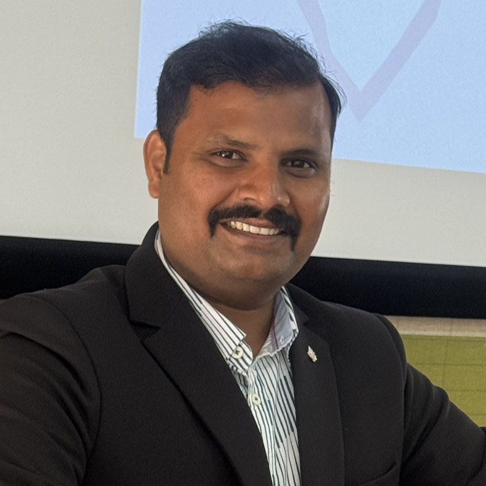
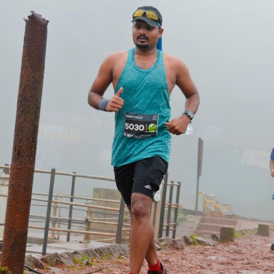

I build the teams that build infrastructure people trust.
Senior Development Manager at IBM Fusion. Virtualization, Hosted Control Planes, Multicluster Management, Observability, and agentic AI for the product. Fourteen years full-time in one lab, plus a year-long internship that started it, most of them spent making distributed systems survive contact with real customers.

Full-time at IBM
14years
Granted
6US patents
Org co-founded
100+ engineers
Longest run
300km, one stage
Track record
Fourteen years, plotted
Scope of ownership over time, with the things worth marking. The line starts at the 2011 internship; full-time engineering begins in October 2012. Hover a point for detail.
Scope of ownershipMilestone
How I lead
Three things I do
Build the room, not the hero
I staff for bench depth, so capability never rests on one person. A 2 a.m. rescue is a system to fix, not a story to retell.
Build the tools, not only the plan
I led the architecture of our observability framework and wrote a lot of it. I take the same approach to running programs: automate the tracking end to end, so progress is visible without anyone chasing it and the team can course-correct on its own rather than wait on my follow-ups.
Stay close to the code
I still read designs and reviews. I am not trying to be the best engineer in the room. I want to know when an estimate does not add up, and to be useful in the discussions that span the whole system.
Experience
One lab, four chapters
Sep 2022 to now
Senior Development Manager, IBM Fusion
Progressed from Senior Technical Lead
Lead 20+ engineers across three squads covering virtualization, hosted control planes, multicluster management and observability, and own agentic AI for the product: the in-product AI assistant for Fusion HCI, built on MCP and LLMs, with the agent skills behind it. Built the Virtualization and Multicluster squads from the first hire through production customer adoption, and act as lab advocate for large enterprise accounts.
Feb 2016 to Aug 2022
Technical Lead: IBM Storage Scale, Data Protection & Escalation Engineering
IBM Storage Scale, Modern Data Protection
Led IBM Storage Scale Object on OpenStack Swift across RHEL and Ubuntu. Ran Asia-Pacific escalations for IBM Storage Scale under a 24/7 follow-the-sun model, in an organisation now 50+ engineers. Founding member and lead of IBM's Modern Data Protection organisation, now 100+ engineers.
Owned quality engineering and automation, and led authentication and security certification across Active Directory, LDAP, NIS and OpenStack Keystone. Qualified NFS, CIFS/SMB, Object and SNIA CDMI protocol stacks.
Sep 2011 to Sep 2012
Software Engineering Intern
Cloud storage & platform development
Built a Dropbox-style cloud storage and synchronisation service on SNIA CDMI. It won the IBM Innovation Showcase and became an IEEE publication.
Building in public
Things I'm making outside work
Open source and long-form writing, mostly at the seam between AI and infrastructure: where agents meet production systems, and how to teach the whole stack.
SessionsIBM Storage Strategy Days and IBM user groups customer-facing technical talks · 2026
Off the clock
The same discipline, different distance

I run ultras. The longest so far is a 300 km single-stage event. Long-distance running and long-running engineering organisations reward the same thing: pace you can hold, not a sprint you can post about. I've also helped a fair number of colleagues take up their first distance.
Alongside work I'm an Executive PhD scholar at IIM Udaipur, researching artificial intelligence, technology management and organisational decision-making.
Contact
Let's talk
Open to conversations about engineering leadership roles in cloud infrastructure, platform and data resilience. LinkedIn is the best place to reach me.